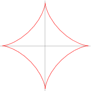
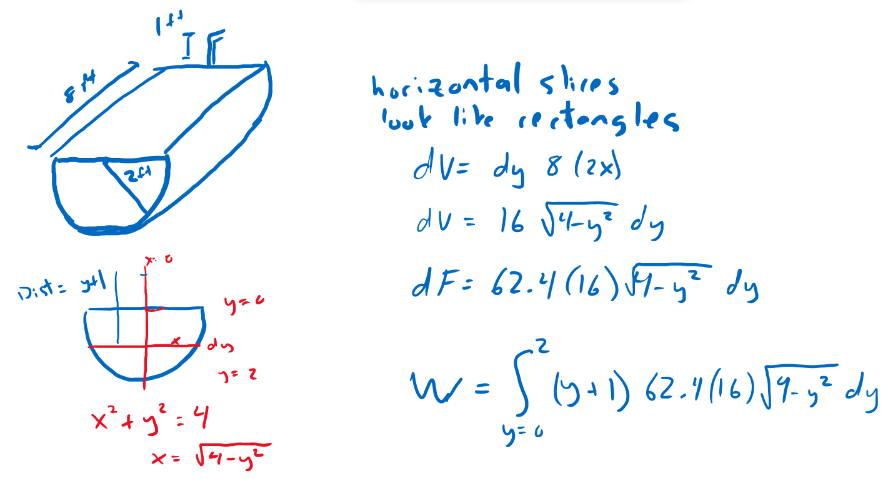
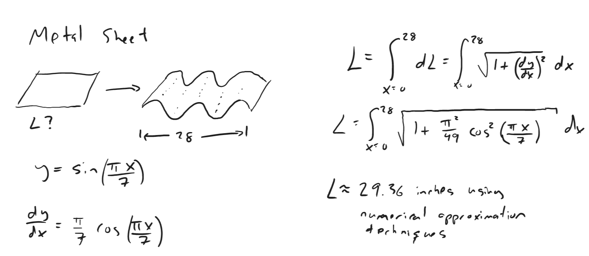

Spring 2023 Applications of the definite integral exam review
Warmup
Take a moment and write down the topics we've covered since the exam 1.
Example - Rocket
Newton's Law of Gravitation states that two bodies having masses \(m_1\) and \(m_2\) attract each other with a force
$$ F = G\frac{m_1m_2}{r^2}$$
where \(G\) is the gravitational constant and \(r\) is the distance between the two bodies. Assume that the mass of the earth is \(5.97 \times 10^{24}\) kg and is concentrated at the center of the earth,
the radius of the earth is \(6.37 \times 10^6\) m, and \(G = 6.67 \times 10^{-11}\) Nm\(^2\)/kg\(^2\).
Set up an integral that represents the work required to launch a rocket of mass 500,000 kg vertically upwards to a height of 10,000 km.
Since gravity acts between two objects at any distance, what is the work required to for the rocket to escape Earth's gravitational field?
Answers
If we let \(M_E, R_E\) be the mass and radius of the Earth, and \(M_R\) be the mass of the rocket we can set up the integrals below.
Note that since the rocket launches from the surface of the Earth, the lower limit of integration is \(R_E\).
\(\displaystyle W = \int_{r=R_E}^{R_E + 10,000} F dr = \int_{r=R_E}^{R_E + 10,000} G\frac{M_E M_R}{r^2} dr\)
If gravity extends to infinite distances we need to let our upper limit of integration go to infinity.
\(\displaystyle W = \int_{r=R_E}^{\infty} G\frac{M_E M_R}{r^2} dr = \lim_{b \to \infty} \int_{r=R_E}^{b} G\frac{M_E M_R}{r^2} dr = \frac{GM_EM_R}{R_E}\)
Example - Astroid
The graph of the equation \(x^{2/3} + y^{2/3} = a^{2/3}, a \geq 0\) is called an astroid. Find the arc length of this graph.
(hint: exploit symmetry)
solution
Let \(L\) be the length in just first quadrant. Then the total length is \(4L\).
\(\displaystyle L = \int_{x=0}^{a}~dL = \int_0^a \sqrt{1 + \left(\frac{dy}{dx}\right)^2}~dx\)
To get \(\displaystyle \frac{dy}{dx}\) we can just differentiate the equation implicitly.
\(\displaystyle L = \int_{x=0}^{a}\sqrt{1 + \left(\frac{-(a^{2/3} - x^{2/3})^{1/2}}{x^{1/3}}\right)^2}~dx\)
\(\displaystyle L = \int_{x=0}^{a}\sqrt{\left(\frac{x^{2/3}+a^{2/3}-x^{2/3}}{x^{2/3}}\right)^2}~dx\)
\(\displaystyle L = \int_{x=0}^{a}\sqrt{\left(\frac{a^{2/3}}{x^{2/3}}\right)^2}~dx\)
\(\displaystyle L = \int_{x=0}^{a}\frac{a^{1/3}}{x^{1/3}}~dx\)
\(\displaystyle L = \frac{3}{2}a\)
Total length is then \(6a\).
Example - volumes of revolution
Consider the region bounded by \(x=0,y=0,x=2,\) and \(y = x^2 + 2\).
Set up integrals that represent the volume created by rotating this region about the
\(x\) axis?
line \(y=6\)?
line \(x = 5\)?
Make sure to include a picture when setting up your integrals.
video
Example - work to pump tank
Consider a tank in the shape of an inverted cone with radius 5m and height 10m filled with water.
What is the work required to pump all the water in this tank out a spout 2 m above the top of the tank?
Remember to show all your work that includes:
a picture
a slice in your picture
a coordinate system
the integral set up
the calculation
Example - force on plate
Let \(F\) be the fluid force on a side of a semicircular plate of radius \(r\) meters submerged in water
so the diameter is level with the water surface. Calculate \(F\) as a function of \(r\).
Example - more pumping
Consider emptying a trough full of water. The trough is 8 ft long and the ends are in the shape of a semicircle with radius 2 ft.
We'll empty the tank by pumping the water out of a pipe extending 1 foot above the top of the trough.
Some tasks to think about:
Draw a picture of this situation.
Where should we place the origin in our coordinate system. Why?
What is the equation of a circle with radius \(R\) centered at the origin?
What direction should we slice to set up an integral? What is the thickness and shape of this slice?
Set up an integral representing the work done to empty the tank. (Note water has weight density 62.4 lbs/cubic ft. )
How would you go about evaluating this integral analytically? What strategies or techniques would you try?
Answer

Other Examples
Find the work required to move a particle along a straight line from \(x=0\) to \(x=\pi/2\) with force \(F(x) = x\sin(2x)\).
A spring has a 2 cm natural length. What is the work required to stretch the spring to 10 cm long if \(k=2\) N/m?
Find the hydrostatic force on a circular plate of radius 2 that is submerged 6 meters in the water.
What is the average value of \(g(x) = x^4\) over the interval \([1,2]\)?
Find the area between \(x = y^2 - 1\) and \(y = -1 + x\).
Set up integrals for the coordinates of the center of mass of the shape above with constant density.
Example - metal sheet
Consider stamping a flat metal sheet into a corrugated pattern 28 inches long with shape given by \(y = \sin(\pi x/7) \).
Set up an integral for the length of the original flat sheet.
Answer
